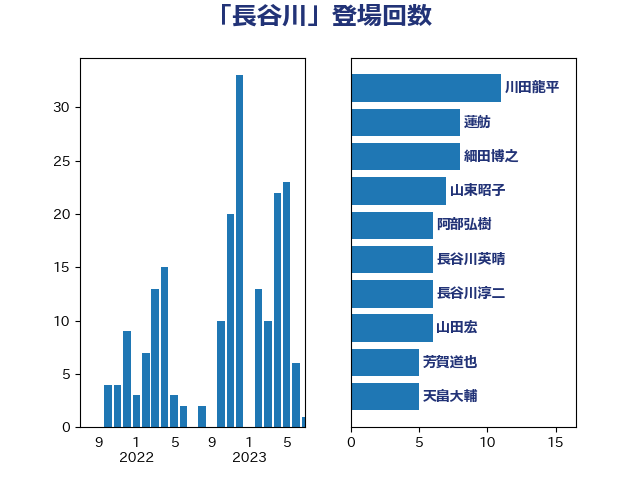

単語「長谷川」

| 川田龍平 | 立憲民主党 | 11 回 |
| 蓮舫 | 立憲民主党 | 8 回 |
| 細田博之 | 自由民主党 | 8 回 |
| 山東昭子 | 自由民主党 | 7 回 |
| 阿部弘樹 | 日本維新の会 | 6 回 |
| 長谷川英晴 | 自由民主党 | 6 回 |
| 長谷川淳二 | 自由民主党 | 6 回 |
| 山田宏 | 自由民主党 | 6 回 |
| 芳賀道也 | 国民民主党 | 5 回 |
| 天畠大輔 | れいわ新選組 | 5 回 |
| 井原巧 | 自由民主党 | 5 回 |
| 長谷川岳 | 自由民主党 | 4 回 |
| 松島みどり | 自由民主党 | 4 回 |
| 古賀友一郎 | 自由民主党 | 4 回 |
| 三原じゅん子 | 自由民主党 | 4 回 |
| 田村智子 | 日本共産党 | 3 回 |
| 河野義博 | 公明党 | 3 回 |
| 東徹 | 日本維新の会 | 3 回 |
| 山本順三 | 自由民主党 | 3 回 |
| 山口俊一 | 自由民主党 | 3 回 |
| 倉林明子 | 日本共産党 | 3 回 |
| 伊東良孝 | 自由民主党 | 3 回 |
| 金子恭之 | 自由民主党 | 2 回 |
| 酒井庸行 | 自由民主党 | 2 回 |
| 足立敏之 | 自由民主党 | 2 回 |
| 谷公一 | 自由民主党 | 2 回 |
| 藤丸敏 | 自由民主党 | 2 回 |
| 石井苗子 | 日本維新の会 | 2 回 |
| 滝沢求 | 自由民主党 | 2 回 |
| 浮島智子 | 公明党 | 2 回 |
| 浜口誠 | 国民民主党 | 2 回 |
| 橋本岳 | 自由民主党 | 2 回 |
| 柘植芳文 | 自由民主党 | 2 回 |
| 松沢成文 | 日本維新の会 | 2 回 |
| 木村英子 | れいわ新選組 | 2 回 |
| 尾辻秀久 | 無所属 | 2 回 |
| 小里泰弘 | 自由民主党 | 2 回 |
| 小沢雅仁 | 立憲民主党 | 2 回 |
| 古賀之士 | 立憲民主党 | 2 回 |
| 佐藤信秋 | 自由民主党 | 2 回 |
| 今枝宗一郎 | 自由民主党 | 2 回 |
| 串田誠一 | 日本維新の会 | 2 回 |
| 鶴保庸介 | 自由民主党 | 1 回 |
| 高橋克法 | 自由民主党 | 1 回 |
| 須藤元気 | 無所属 | 1 回 |
| 鈴木宗男 | 日本維新の会 | 1 回 |
| 野村哲郎 | 自由民主党 | 1 回 |
| 輿水恵一 | 公明党 | 1 回 |
| 谷川弥一 | 自由民主党 | 1 回 |
| 窪田哲也 | 公明党 | 1 回 |
| 石破茂 | 自由民主党 | 1 回 |
| 矢倉克夫 | 公明党 | 1 回 |
| 田村まみ | 国民民主党 | 1 回 |
| 猪口邦子 | 自由民主党 | 1 回 |
| 海江田万里 | 立憲民主党 | 1 回 |
| 江藤拓 | 自由民主党 | 1 回 |
| 榛葉賀津也 | 国民民主党 | 1 回 |
| 森屋隆 | 立憲民主党 | 1 回 |
| 根本匠 | 自由民主党 | 1 回 |
| 本田顕子 | 自由民主党 | 1 回 |
| 末松信介 | 自由民主党 | 1 回 |
| 木原稔 | 自由民主党 | 1 回 |
| 平木大作 | 公明党 | 1 回 |
| 平口洋 | 自由民主党 | 1 回 |
| 岡田直樹 | 自由民主党 | 1 回 |
| 山本博司 | 公明党 | 1 回 |
| 山本佐知子 | 自由民主党 | 1 回 |
| 山崎正恭 | 公明党 | 1 回 |
| 山口壯 | 自由民主党 | 1 回 |
| 山下雄平 | 自由民主党 | 1 回 |
| 宮本徹 | 日本共産党 | 1 回 |
| 伊波洋一 | 無所属 | 1 回 |
| 伊佐進一 | 公明党 | 1 回 |
| 中根一幸 | 自由民主党 | 1 回 |
| 三上えり | 立憲民主党 | 1 回 |
| 三ッ林裕巳 | 自由民主党 | 1 回 |
| こやり隆史 | 自由民主党 | 1 回 |